From noise to imagesDenoising diffusion, from one noisy pixel to text-to-image models
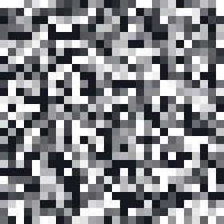
t = 1000
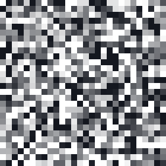
600
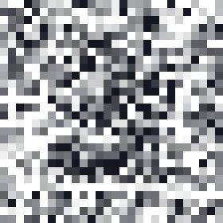
400
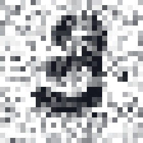
200
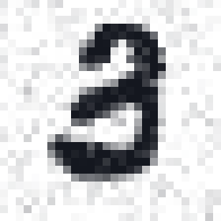
500
One sample from the small model we train in this lecture: 814,145 parameters, about 50 minutes on a laptop GPU.
our model
Start with a question
This digit was pure noise 1,000 steps ago
t = 1000
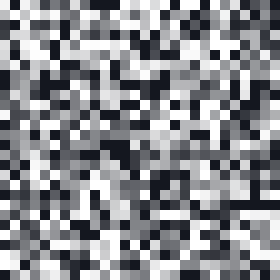
800600400200500
What happened at each step: one network looked at the current image and removed a little of what it thought was noise.
What never happened: nobody gave it a digit to copy. It started from random numbers.
How can learning to remove noise let us create an image from nothing but noise?
our model
The same idea, conditioned on different things
What would each model produce?
a sentence
“A basket full of cherries”
→
?
a face with a region missing
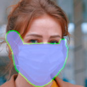
→
?
a crude painting
→
?
a blurry, low-resolution face
→
?
an edge map + “bird”
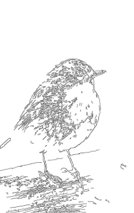
→
?
boxes: planet, sun
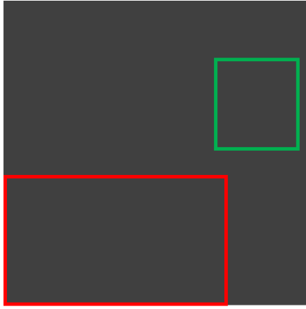
→
?
4 photos of one dog + “at the Acropolis”
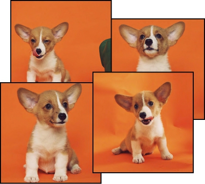
→
?
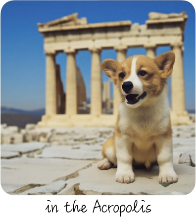
a 10 m satellite image
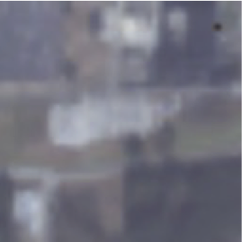
→
?
Eight different inputs, one recipe. By the end you will be able to say, for each, what the network was trained to predict.
published
LDM (Rombach et al. 2022) · RePaint (Lugmayr et al. 2022) · SDEdit (Meng et al. 2022) · SR3 (Saharia et al. 2022) · ControlNet (Zhang et al. 2023) · GLIGEN (Li et al. 2023) · DreamBooth (Ruiz et al. 2023) · DiffusionSat (Khanna et al. 2024)
Text to image · the prompt we will follow later
One prompt, several valid images
“A basket full of cherries”
sample 1sample 2sample 3sample 4
Look closely: two samples carry stock-photo watermarks. The model was trained on web images with captions, and it learned the watermarks too.
Which one is correct? None and all: a prompt describes a distribution of images, and a generator samples from it.
published
Latent Diffusion, Rombach et al. 2022, project-page Figure 17 (model trained on Conceptual Captions). Seeds are not reported.
Completion · we will do this ourselves in Part 6
Fill a missing region
input · lavender = missing→
five completions?
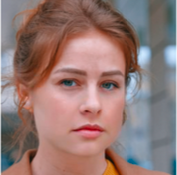
The visible pixels constrain the answer; they do not decide it. Smile or no smile is still the model's choice.
published
RePaint, Lugmayr et al. 2022 (project figure): one input, five independent samples.
Super-resolution · keep this picture in mind for Part 2
Is the sharp detail real?
bicubic
regression
SR3 sample
real photo
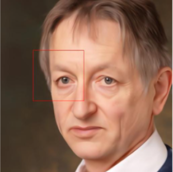
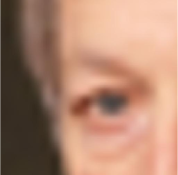
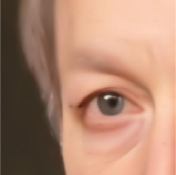
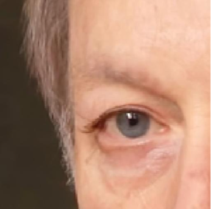
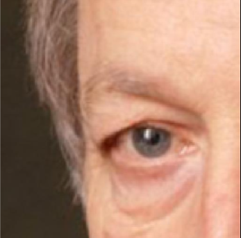
Bicubic = the low-resolution input, enlarged smoothly. Regression = one network trained with squared error.
Regression blurs, a generator invents. Compare the wrinkles under the eye: plausible, and different from the real photo.
published
SR3, Saharia et al. 2022 (project figure). The lower row enlarges the boxed eye region.
A question for our lab
Would you count brick kilns in a generated image?
Sentinel-2, 10 m per pixel
the input
DiffusionSat sample
conditioned on the input
real high-resolution image
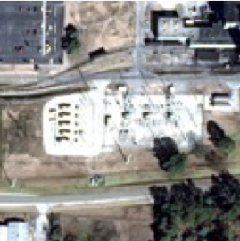
withheld reference
Our lab maps brick kilns across South Asia from this kind of 10 m imagery. A kiln is only a few pixels wide.
Plausible is not measured. Before using generated detail, we must check it against held-out observations.
published
DiffusionSat, Khanna et al. 2024, super-resolution figure (left panel, row 5). Columns: Sentinel-2 RGB, DiffusionSat output, high-resolution reference.
Where Lecture I left us
Two generators we already trained, and their problems
VAE samples (16-number code)
One decoder pass from a random code. Smooth to train, but the digits come out blurry.
GAN samples
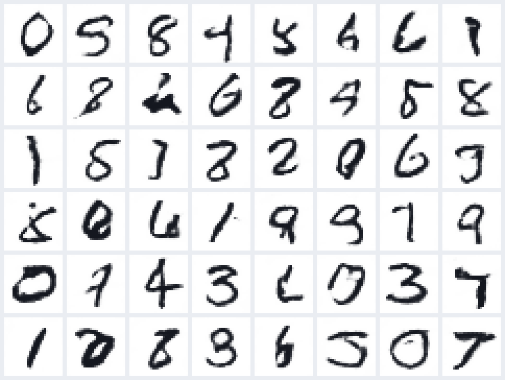
Sharper, but training is a two-player game that can collapse onto a few modes.
Diffusion's bet: train with a plain regression loss, like the VAE, and generate in many small steps instead of one big jump.
our model Lecture I
The plan
Four questions answer the core of the lecture
What noisy input do we train on?
Part 1 · corrupt a digit
What does the network learn to predict?
Part 2 · training
How do predictions become a new image?
Part 3 · sampling
Why is that the right loss?
Part 4 · Lecture I's ELBO
Then: inside the network (Part 5), steering it with a prompt (Part 6), and text instead of pixels (Part 7).
One running example throughout: a single 7 from the MNIST test set, and one pixel of it.
Part 1 of 7
Destroy a digit, one small step at a time
Before any learning, we fix a recipe that turns an image into noise. Goal of this part: a formula for the noisy image at any step t, checked by hand on one pixel. No neural network yet.
1Corrupt a digit
2Train: predict the noise
3Sample: run it backwards
4Why this loss: the ELBO
5Inside the network
6Steer with a condition
7Text by denoising
The running example
Our 7, and one pixel of it
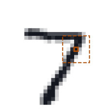
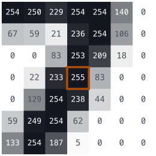
Pixels are stored as 0 … 255. We rescale them:
$$x = \dfrac{v}{127.5} - 1$$
0 (paper) → −1, 255 (ink) → +1
our pixel row 12, column 19: value 255, so $x_0 = +1$.
One image is a tensor $[1, 28, 28]$; a batch is $[B, 1, 28, 28]$.
We will follow this one pixel, with value +1, through every equation in Parts 1–3.
MNIST test image 0
The forward step
One step: shrink the image a little, then add fresh noise
The square roots keep the total variance at 1, so after many steps we land exactly on a standard Gaussian, $\mathcal N(0, I)$.
computed
Repeat on the real schedule
A thousand small steps dissolve the 7
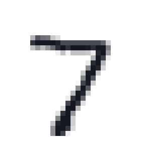
t = 0signal 1.00
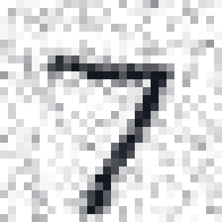
t = 100signal 0.947
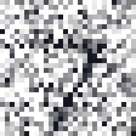
t = 300signal 0.63
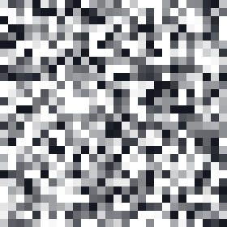
t = 500signal 0.28
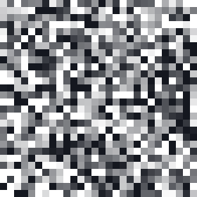
t = 700signal 0.083
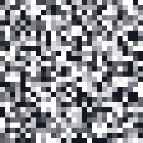
t = 1000signal 0.006
One fresh noise image per step; β grows linearly from 0.0001 to 0.02 over T = 1000 steps. “Signal” is the number that multiplies the original 7 after t steps.
After about t = 600 every panel looks the same: almost nothing of the 7 is left.
computed no model
Keeping score
How much signal is left after t steps: $\bar\alpha_t$
t = 0
1
t = 1
0.8
0.2
t = 2
0.64
0.36
$$\alpha_t = 1-\beta_t \quad(\text{here } 0.8)$$
$$\bar\alpha_t = \alpha_1\alpha_2\cdots\alpha_t$$
$$\bar\alpha_2 = 0.8\times0.8 = 0.64$$
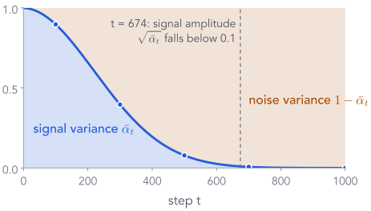
The real schedule: the dots are the panels on the previous slide.
Blue is signal variance $\bar\alpha_t$, amber is noise variance $1-\bar\alpha_t$; they always add to 1. Signal falls below half at t = 260.
Each reverse step only has to undo a small step, which is why a Gaussian with a learned mean is a good model of it.
End of Part 1
What we did, and what comes next
What we did
One step: shrink by $\sqrt{1-\beta_t}$, add $\sqrt{\beta_t}$ fresh noise; the square roots keep the variance at 1.
$\bar\alpha_t$ is the signal left after t steps: 1 at the start, 0.00004 at t = 1000.
Jump to any step in one line: $x_t = \sqrt{\bar\alpha_t}\,x_0 + \sqrt{1-\bar\alpha_t}\,\epsilon$. Our pixel: 0.5.
One noisy value cannot tell ink from paper, so going back needs a learned model.
Next: teach a network to go back
We can make as many noisy images as we like, and we know the noise in each.
Part 2 asks a network to predict that noise. The noise we drew becomes the label.
Part 2 of 7
Training: a regression problem we build ourselves
Part 1 gave us a way to make noisy images. Goal of this part: turn that into (input, label) pairs and a loss, so that a network learns to predict the noise, and see what it can and cannot learn.
✓Corrupt a digit
2Train: predict the noise
3Sample: run it backwards
4Why this loss: the ELBO
5Inside the network
6Steer with a condition
7Text by denoising
One training example, built from scratch
Make an input and its label; ask the network for the noise
Everything except $\hat\epsilon$ was made by us. The noise we drew is the label: we get inputs and labels for free.
our model prediction
Which label? Three equivalent choices
From one noisy input we could ask for $\epsilon$, for $x_0$, or for a mix
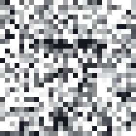
input $x_t$, t = 350→
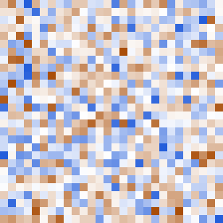
predict the noise $\epsilon$DDPM (Ho et al. 2020)predict the clean image $x_0$
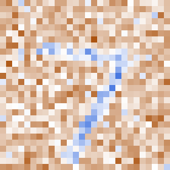
predict $v = \sqrt{\bar\alpha_t}\,\epsilon - \sqrt{1-\bar\alpha_t}\,x_0$used by many later models
Since $x_t = \sqrt{\bar\alpha_t}\,x_0 + \sqrt{1-\bar\alpha_t}\,\epsilon$, knowing $x_t$ and any one of them gives the others.
We follow DDPM and predict $\epsilon$: whatever t is, the target is always a standard Gaussian image, so the regression stays well scaled.
computed
The loss
Squared error, pixel by pixel, then averaged
pixel (row, col)
target $\epsilon$
prediction $\hat\epsilon$
$(\hat\epsilon-\epsilon)^2$
ours (12,19)
−2.33
−2.34
0.000
(8,10)
1.64
1.82
0.032
(20,15)
−0.18
−0.30
0.017
(3,3)
−0.58
−0.58
0.000
mean over all 784 pixels
0.015
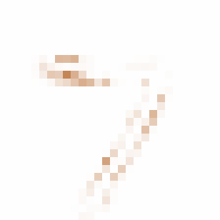
squared error at every pixel: the largest errors sit on the stroke of the 7
loss = F.mse_loss(eps_hat, eps)
That is the whole objective: an ordinary regression on 784 numbers.
our model
Back to our toy pixel, x₂ = 0.5
Can the network recover the exact noise? No, so it averages
Random t per image means every batch trains the network at many noise levels at once.
computed
The complete training step
The whole training step in PyTorch
beta = torch.cat([torch.zeros(1), torch.linspace(1e-4, 0.02, 1000)])alpha_bar = torch.cumprod(1 - beta, 0) # once, as in Part 1t = torch.randint(1, T + 1, (B,)) # a step per imageeps = torch.randn_like(x0) # the labelab = alpha_bar[t].reshape(B, 1, 1, 1)xt = ab.sqrt() * x0 + (1 - ab).sqrt() * epseps_hat = model(xt, t)loss = F.mse_loss(eps_hat, eps)opt.zero_grad(); loss.backward(); opt.step()
the $\bar\alpha$ table; t runs from 1 to 1000
draw t and $\epsilon$
build the noisy input
predict the noise
regress, update $\theta$
No reverse chain, no sampling loop: one random step per image, one forward pass, one MSE.
The computation graph
Gradients flow only into the network's weights
$x_0$, t and $\epsilon$ are constants made before the forward pass; only $\theta$ gets a gradient.
Our training run
Our training run, and where the network still struggles
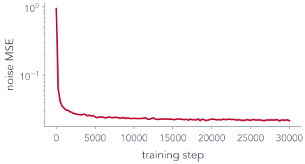
noise MSE during training (smoothed)
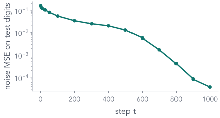
noise MSE on 512 test digits, by step t
814,145 parameters · batch 128 · 30000 steps (about 64 passes over MNIST) · about 50 minutes on an Apple-silicon GPU
Predicting the noise is hardest at small t (0.16 at t = 1) and easy near pure noise (0.000038 at t = 1000), where the input is almost exactly $\epsilon$.
our model
End of Part 2
What we did, and what comes next
What we did
A training example is (noisy image, step t) as input and the noise $\epsilon$ as the label.
The loss is plain squared error over 784 pixels; one random t per image, no loop.
Even a perfect network cannot recover $\epsilon$ exactly; it predicts the average of what is possible: −0.24 for our pixel.
Our network: 814,145 parameters, 30,000 steps, hardest at small t.
Next: use the predictions to generate
At generation time there is no clean image and no true noise, only the network.
Part 3 turns its noise prediction into one small backward step, and repeats.
Part 3 of 7
Sampling: run the chain backwards with the network
We have a trained noise predictor. Goal of this part: start from pure noise and use the network to take one small backward step at a time, until a digit appears. Same toy pixel, same numbers.
✓Corrupt a digit
✓Train: predict the noise
3Sample: run it backwards
4Why this loss: the ELBO
5Inside the network
6Steer with a condition
7Text by denoising
The first step of generation
Start from noise; all we have is the network's guess
$x_{1000} \sim \mathcal N(0, I)$→
networkt = 1000
→
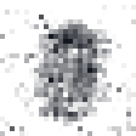
its guess $\hat x_0$ of a clean image
The first guess is a featureless average. The trick is to move only a little way towards it, then ask again.
our model
Our toy pixel again: $x_2 = 0.5$, and suppose $\hat\epsilon = -0.4$
Substitute $\hat x_0 = (x_t - \sqrt{1-\bar\alpha_t}\,\hat\epsilon)/\sqrt{\bar\alpha_t}$ into the blend and simplify: the same 0.708, computed directly from $\hat\epsilon$.
Read it as: remove a fraction $\beta_t/\sqrt{1-\bar\alpha_t}$ of the predicted noise, then rescale by $1/\sqrt{\alpha_t}$. The code uses this form.
computed
One reverse step · part 2
Then add fresh noise, except at the very last step
At t = 1 we return the mean with no noise: the output is the network's final estimate.
$\hat\epsilon$−0.400
z0.300
mean $\mu_\theta$
–
fresh noise $\sigma z$
–
next state $x_1$
–
clean guess $\hat x_0$
–
The mean says where to go; the noise keeps each step a sample from a distribution rather than a single best guess.
computed
Do not confuse these
Four numbers on one line
The sampler keeps x₁ = 0.808 and feeds it back in. The guess x̂₀ = 0.925 is only for looking at.
computed
Why add noise back at every step?
Run our model with and without the fresh noise
normal sampler mean + $\sigma_t z$
mean only same starting noise, $\sigma_t = 0$
Average distance between the 8 images: 21.9 with noise, 0.6 without.
Without fresh noise, all eight starting points end on the same thin “1”. Following only the mean leads every start to the same average answer.
our model
The complete sampler
The loop from the first slide, in ten lines
x = torch.randn(B, 1, 28, 28) # x_Tfor t in range(T, 0, -1): # 1000, 999, ..., 1 tt = torch.full((B,), t) eps_hat = model(x, tt) c = beta[t] / (1 - alpha_bar[t]).sqrt() mean = (x - c * eps_hat) / alpha[t].sqrt() if t > 1: x = mean + post_var[t].sqrt() * torch.randn_like(x) else: x = mean # last step: no noise
start from pure noise
one network call per step, same weights
the mean formula
fresh noise with the shape of x
1000 network calls for one batch of images. Sampling is slow; training was one call per example.
What we watch during generation
The state, and the network's guess at every stage
1000
800
600
400
200
100
50
1
state $x_t$guess $\hat x_0$
The guess commits to a digit long before the state looks clean: the overall shape is decided at high noise, details at low noise.
our model
Try it
Scrub through a sample as it forms
state $x_t$the network's guess $\hat x_0$
step1000
seed
Recorded from our model every 20 steps; nothing is computed in the browser.
Drag slowly through t = 600 … 300: that is where each seed decides which digit it will be.
our model
Evidence, not a showcase
32 samples from our model, in the order they came out
top: our first six samples · bottom: the closest of the 60,000 training images
The samples resemble training digits without copying them. Judge a generator by an unselected batch, and check for memorisation.
our model seed 667, unselected
End of Part 3
What we did, and what comes next
What we did
Invert the jump formula to guess the clean image: $\hat x_0 = 0.925$ (true 1).
Knowing $x_0$, the backward step is a Gaussian with mean 0.745; with the guess instead, 0.708.
Add fresh noise $\sigma_t z$ at every step but the last: 0.708 → 0.808. Without it, every sample is the same “1”.
Repeat 1000 times from pure noise: the loop on the first slide.
Next: was “predict the noise” the right loss?
Part 2 chose noise MSE because it was easy. The two means on this slide, 0.745 and 0.708, are exactly what the ELBO compares.
Part 4 shows the ELBO becomes a weighted noise MSE.
Part 4 of 7
Why is noise MSE the right loss?
Part 2 chose “predict the noise” because it is easy to set up. Now that Part 3 has given us both reverse means, the true one and the model's, we can show it is what the ELBO from Lecture I asks for, up to a weighting.
✓Corrupt a digit
✓Train: predict the noise
✓Sample: run it backwards
4Why this loss: the ELBO
5Inside the network
6Steer with a condition
7Text by denoising
Lecture I, side by side with today
A VAE has one latent; diffusion has a chain of them
If diffusion is a VAE with a fixed encoder, the VAE's training objective, the ELBO, should apply to it.
Lecture I's ELBO, again
Diffusion is a VAE with a fixed encoder
Lecture I: VAE
Diffusion
latent
one code $z$, 2–16 numbers
$x_1, \dots, x_T$: each the size of the image
encoder
$q_\phi(z\mid x)$, learned
$q(x_{1:T}\mid x_0)$: fixed noising, nothing to learn
decoder
$p_\theta(x\mid z)$, one network pass
$p_\theta(x_{t-1}\mid x_t)$, the same network used T times
prior
$p(z) = \mathcal N(0, I)$
$p(x_T) = \mathcal N(0, I)$
bound
$\log p(x) \ge$ reconstruction $-$ KL
$\log p_\theta(x_0) \ge \mathbb E_q\!\left[\log \dfrac{p_\theta(x_{0:T})}{q(x_{1:T}\mid x_0)}\right]$, the same Jensen step
Same ELBO derivation as Lecture I. The new part is how it splits up, one term per step.
Training pushes the model's reverse mean onto the true one. Next: rewrite both means in terms of noise.
computed
The one substitution that explains the loss
Write both means with noise: the KL becomes noise MSE
model:$\mu_\theta$$= \dfrac{1}{\sqrt{\alpha_t}}\Big(x_t - c_t\,\cdec{\hat\epsilon}\Big)$$c_t = \beta_t/\sqrt{1-\bar\alpha_t}$, from Part 3true:$\tilde\mu$$= \dfrac{1}{\sqrt{\alpha_t}}\Big(x_t - c_t\,\cz{\epsilon}\Big)$the same formula with the true noise (it is the posterior mean of Part 3)gap:$\tilde\mu - \mu_\theta$$= \dfrac{c_t}{\sqrt{\alpha_t}}\big(\cdec{\hat\epsilon} - \cz{\epsilon}\big)$$x_t$ cancelsso:$D_{KL}$$= \underbrace{\dfrac{\beta_t^2}{2\sigma_t^2\,\alpha_t\,(1-\bar\alpha_t)}}_{w_t}\;\closs{(\hat\epsilon - \epsilon)^2}$a weighted squared error on the noise
$w_2 = 0.625$toy weight at t = 2×$(-0.4 + 0.5)^2 = 0.01$our pixel's noise error=0.00625the KL from the last slide
Each ELBO term is a weighted MSE between predicted and true noise, which is why we trained on noise.
computed
The qualification
DDPM keeps the squared error and drops the weights
The bound's weight falls about 109× from t = 2 to t = 500. Setting every weight to 1 gives relatively more weight to noisy steps than the bound does.
It also drops $L_T$ (no parameters) and the discrete pixel term $L_0$.
The training loss is not the ELBO; it is a re-weighted sum of its per-step terms, chosen because it gave better samples (Ho et al. 2020).
computed
End of Part 4
What we showed, and what comes next
What we did
Diffusion is a VAE whose encoder is the fixed noising chain.
Its ELBO is one KL per reverse step.
Each KL is a weighted squared error on the noise: $0.625 \times 0.1^2$ for our pixel.
DDPM trains with weight 1 at every step instead.
Next: the network itself
The whole method treats the network as a box that takes $x_t$ and $t$ and returns a noise image. Part 5 opens the box.
Part 5 of 7
Inside the denoiser: networks you already know
So far the network was a box. Goal of this part: open it: a U-Net for pixels, a Transformer for patches, and why big models denoise a compressed image.
Steering the denoiser with a prompt, a label or known pixels
Everything so far generates a random digit. Goal of this part: make it generate what we ask for. Add the condition c as another input, $\epsilon_\theta(x_t, t, c)$; the training step is unchanged.
✓Corrupt a digit
✓Train: predict the noise
✓Sample: run it backwards
✓Why this loss: the ELBO
✓Inside the network
6Steer with a condition
7Text by denoising
Back to “A basket full of cherries”
What the network receives from a prompt
The prompt becomes 77 vectors, computed once and reused at every one of the denoising steps.
computed real CLIP tokenizer
Cross-attention, reversed from the VLM lecture
Image positions ask questions; words supply the answers
In a VLM, text queried image features. Here image features query the text: each position pulls in the words relevant to it.
illustrative weights
One image query, three words, worked by hand
Scores, softmax over the words, weighted sum of values
“Look like a 7”: a separate MNIST classifier's verdict on all 64 samples. Spread: average pixel distance between samples. 8 of 64 shown.
At s = 1, 95% already look like a 7. Larger s gives 100%, with bolder and more alike strokes: spread 16.4 → 15.7.
our model
Back to the opener: filling a missing region
Inpainting with our model: paste the known pixels back in
six samples:
No retraining: known pixels come from the forward process, unknown ones from the reverse step. Different seeds give different digits that agree with the top half.
our model
Back to the opener: a crude painting becomes a picture
Start the reverse chain from a noised sketch
blocky sketch
start at t = 200
t = 400
t = 600
t = 800
top: the noised sketch $\sqrt{\bar\alpha_{t_0}}\,x_{\text{sketch}} + \sqrt{1-\bar\alpha_{t_0}}\,\epsilon$ · below: three outputs each
Little noise keeps the sketch's blocks; a lot of noise gives a realistic digit that may drift from it. The starting t sets the trade-off.
our model
The same sampler loop from Part 3, with conditions added
Guidance and inpainting are a few changed lines
x = torch.randn(B, 1, 28, 28)for t in range(T, 0, -1): tt = torch.full((B,), t) eps_u = model(x, tt, none) # label hidden eps_c = model(x, tt, label) # label 7 eps_hat = eps_u + s * (eps_c - eps_u) # guidance c = beta[t] / (1 - alpha_bar[t]).sqrt() mean = (x - c * eps_hat) / alpha[t].sqrt() x = mean + post_var[t].sqrt() * torch.randn_like(x) if t > 1 else mean known_t, _ = corrupt(x_known, torch.full((B,), t - 1)) x = mask * known_t + (1 - mask) * x # inpainting
guidance: two calls, one line of arithmetic
inpainting: overwrite the known pixels, noised to the next step
SDEdit: change only the first line, start from the noised sketch at $t_0$
The trained network never changes; only how we call it and what we do with its output.
Back to the opener: super-resolution
Super-resolution: feed the low-res image in as extra channels
low-res, enlarged+
noisy $x_t$
high-res state→network6 input channels→
$\hat\epsilon$
noise in $x_t$⇒SR3 sample
Unlike inpainting, this needs a model trained with the low-res input. And, as with our lab images, the added detail is a sample, not a measurement.
published
SR3, Saharia et al. 2022. Diagram: the conditioning scheme described in the paper (concatenation of the upsampled input).
Part 7 of 7
Can text be generated by denoising?
Pixels are numbers, so Gaussian noise makes sense; words are not. Goal of this part: a different kind of corruption for tokens, with the rest of the recipe unchanged.
✓Corrupt a digit
✓Train: predict the noise
✓Sample: run it backwards
✓Why this loss: the ELBO
✓Inside the network
✓Steer with a condition
7Text by denoising
Why not add Gaussian noise to token IDs?
Token IDs are arbitrary labels; arithmetic on them means nothing
Same pattern as images: corrupt by a random amount, predict what was removed. The model sees the whole sequence in both directions.
illustrative probabilities
Generation, the discrete version
Start masked; fix the most confident slots first, in any order
startThedog???prompt fixed · 3 response slots
step 1
slot 3
chased0.45ate0.25
slot 4
the0.40a0.33
slot 5
ball0.71bone0.13
Thedog??ball
step 2
slot 3
chased0.78ate0.07
slot 4
the0.62a0.26
Thedogchasedtheball
“ball” was chosen first, then two words at once. Every step predicts all hidden slots, and seeing “ball” made the others easier.
illustrative a scripted trace
Same prompt, same three slots
Two ways to write the same sentence
autoregressive (GPT)
masked diffusion (LLaDA)
one pass predicts
the next token only
every masked token
context used
tokens to the left (causal mask)
all visible tokens, both sides
order
left to right, fixed
any order; set by confidence
passes for our 3 slots
3
here 2; in general a chosen number of steps
length
stop when an end token appears
response length chosen up front
Fewer passes is not automatically faster: each masked-diffusion pass processes the whole sequence, and autoregressive models reuse cached work.
illustrative
Back to the opening slide
Now we can say what each model is trained and run to do
noisy object
condition c
what changes in our recipe
text → image
image latent
77 text vectors
cross-attention to the prompt; classifier-free guidance
fill a region
pixels
the known pixels
paste noised known pixels back at every step (no retraining)
painting → photo
pixels
the painting
start the reverse chain at $t_0$ from the noised painting
super-resolution
high-res pixels
low-res image
extra input channels; trained on image pairs
edges → image
image latent
edge map + prompt
a trainable copy of the encoder reads the edges (ControlNet)
one particular dog
image latent
prompt with a rare word
fine-tune the denoiser on 3–5 photos first (DreamBooth)
The dog ? ? text
tokens
the prompt
mask instead of Gaussian noise; cross-entropy instead of MSE
One idea throughout: corrupt, learn to undo one step, then repeat from noise, with the condition as an extra input.
The four questions, answered
The whole method on one slide
Training input: $x_t = \sqrt{\bar\alpha_t}\,x_0 + \sqrt{1-\bar\alpha_t}\,\epsilon$ for a random t
our pixel: 0.8·1 + 0.6·(−0.5) = 0.5
Target: the noise $\epsilon$, with squared error
best possible guess: an average, −0.24
Sampling: from $x_T \sim \mathcal N(0, I)$, repeat mean + $\sigma_t z$ down to t = 1
one step: 0.5 → 0.708 → 0.808
Why: each ELBO term is a weighted noise MSE; DDPM drops the weights
our pixel: $0.625 \times 0.1^2 = 0.00625$
Removing noise creates an image because each small step is a sample from the learned reverse distribution, and the steps add up.
Check yourself
Three questions to answer before next class
Does training require running the reverse chain?
No. One random t, one jump-formula input, one network call, one MSE per example.
Why is the guess $\hat x_0$ different from the next state $x_{t-1}$?
$\hat x_0$ is a full jump to a clean estimate, unreliable at high noise; $x_{t-1}$ moves only a little towards it, adds fresh noise, and is the state fed back in.
What changes when the data are tokens?
Corruption becomes masking and the loss becomes cross-entropy on masked positions; the sampler unmasks confident slots over several passes.
Appendix
Derivations and extensions
A1 adding Gaussians · A2 the training posterior · A3 the bound · A4 $\epsilon$, $x_0$ and $v$ · A5 schedules · A6 DDIM · A7 the score view · A8 flow matching · A9 masked-diffusion objective · A10 attention heads · A11 reporting a generated example
A1 · the jump formula for every t
Independent Gaussians add: the step from t − 1 to t
assume$x_{t-1} = \sqrt{\bar\alpha_{t-1}}\,x_0 + \sqrt{1-\bar\alpha_{t-1}}\,\epsilon'$one step$x_t$$= \sqrt{\alpha_t}\,x_{t-1} + \sqrt{\beta_t}\,\eta_t = \sqrt{\alpha_t\bar\alpha_{t-1}}\,x_0 + \sqrt{\alpha_t(1-\bar\alpha_{t-1})}\,\epsilon' + \sqrt{\beta_t}\,\eta_t$variances$\alpha_t(1-\bar\alpha_{t-1}) + (1-\alpha_t) = 1 - \alpha_t\bar\alpha_{t-1} = 1-\bar\alpha_t$so$x_t$$= \sqrt{\bar\alpha_t}\,x_0 + \sqrt{1-\bar\alpha_t}\,\epsilon$, true for t = 1, hence for all t
Toy check at t = 2: 0.8 × 0.2 + 0.2 = 0.36 = 1 − 0.64 (Part 1).
computed
A2 · where Part 3's posterior comes from
Knowing $x_0$ makes the reverse step a known Gaussian
The model's reverse mean is the true posterior mean with $\hat x_0$ plugged in; rewriting $\hat x_0$ in terms of $\hat\epsilon$ gives the formula of Part 3.
computed
A3 · from the ELBO to one term per step
Bayes on each forward step makes the bound telescope
$-\log p_\theta(x_0)$$\le$$\mathbb E_q\Big[-\log p(x_T) - \textstyle\sum_{t\ge1}\log\dfrac{p_\theta(x_{t-1}\mid x_t)}{q(x_t\mid x_{t-1})}\Big]$Jensen, as in Lecture I, with $p_\theta(x_{0:T}) = p(x_T)\prod_t p_\theta(x_{t-1}\mid x_t)$ and $q(x_{1:T}\mid x_0)=\prod_t q(x_t\mid x_{t-1})$for $t\ge2$:$q(x_t\mid x_{t-1}) = \dfrac{q(x_{t-1}\mid x_t, x_0)\;q(x_t\mid x_0)}{q(x_{t-1}\mid x_0)}$ (Bayes, using the Markov property)so$=$$\underbrace{D_{KL}(q(x_T\mid x_0)\,\|\,p(x_T))}_{L_T} \;-\; \underbrace{\mathbb E_q\log p_\theta(x_0\mid x_1)}_{L_0}$$+$$\sum_{t=2}^T \underbrace{\mathbb E_q D_{KL}(q(x_{t-1}\mid x_t,x_0)\,\|\,p_\theta(x_{t-1}\mid x_t))}_{L_{t-1}}$
The ratios $q(x_t\mid x_0)/q(x_{t-1}\mid x_0)$ cancel in a chain, leaving only $q(x_T\mid x_0)$: this is the decomposition used in Part 2.
A4 · three targets, one rotation
$x_t$ and $v$ are $x_0$ and $\epsilon$ rotated by an angle that grows with t
For the cluster data this score is known exactly, so we can run the sampler with the exact $\epsilon$ instead of a network.
Arrows: the score at t = 150. Lines: 8 reverse trajectories (deterministic DDIM steps) from noise; dots: 400 final samples, which land on the clusters.
computed exact score, no network
A8 · flow matching
Learn a velocity along straight lines from noise to data


 7: pixel = +1
7: pixel = +1